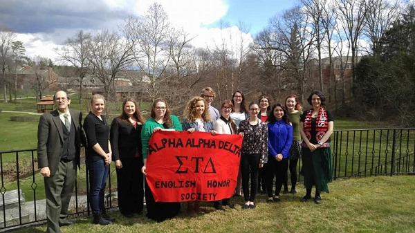
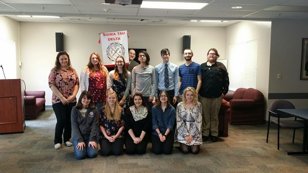
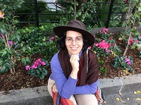
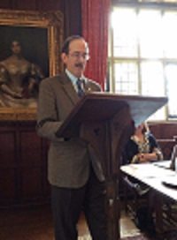
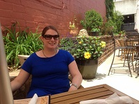

Celebrating 25 Years!
At the 2016 International Convention in Minneapolis, we were recognized for being an active chapter of Sigma Tau Delta for twenty-five years! Dr. Beshero-Bondar was also recognized for her ten years of service to Sigma Tau Delta as one of our faculty sponsors.
 **Get Involved**
How to become an inducted member:
- Students must have earned at least a 3.0 GPA, and have completed the equivalent of three semesters work, or 45 credits.
- Students must have taken at least two English Literature or English Writing courses beyond Composition 0020, and must have earned at least a B (3.0) average in those English courses.
Call for Chapter Officers
At the end of every year we have a call for officer nominations. We encourage you, as an active member of our chapter, to nominate yourself and others to an officer position. Below are the variety of officer positions available and a brief description of each officer's duties. For more information on chapter officer positions see the detailed descriptions provided by the international organization.
- President: holds our chapter together by organizing and running chapter meetings and events. The chapter President is also responsible for assigning tasks to fellow officers and keeping our chapter sponsors updated on chapter news. The president is a fundamental officer in the process of inducting new members and running elections for the term following their exit.
- Vice President: provides support to the President in running meetings and events. In the past, the Vice President has been responsible for creating event/fundraiser advertisements or assigning those tasks to other members under his/her management.
- Secretary: maintains a record of meeting minutes and is responsible for providing the President with said minutes for chapter distribution.
- Treasurer: monitors chapter funds by regularly meeting with the director of Student Activities, our chapter president, and our chapter sponsors.
- House Representative: attends monthly SGA meetings and reports updates regarding campus affairs to members at regular chapter meetings.
- Netwallah: is responsible for updating the chapter website and maintaining our GitHub repository, which hosts website development and Digital Humanities convention round table files.
- Historian / Photographer: (position rarely held) attends chapter events and keeps a long-lasting record of chapter activities through photographs, videos, and a detailed account of his/her experience.
How to become an Associated Member (Friend of the Chapter):
- There is no GPA/Credit Hour requirement.
- Simply, become involved in Chapter events and/or meetings.
How to become an Alumni Member:
Sigma Tau Delta members are members for life, and become alumni when they cease current enrollment as student or faculty members in a college or university with an active chapter. In order to present at conference and apply for graduate school scholarships after graduation from Pitt-Greensburg you will need to join the Alumni chapter, Alumni Epsilon.
In addition to the prestige of membership in an international honor society, there are many other benefits of affiliation including thousands of dollars in scholarship and award opportunities, regional and national conferences, as well as internship and publication possibilities. One especially noteworthy benefit of membership is that students are invited to submit papers for presentation at Sigma Tau Delta’s annual spring convention, held each year in one of the Society’s six regions of the country. Students selected to present their work in this national venue also have the opportunity to win convention writing awards and to attend presentations and workshops by nationally recognized authors. In summary, Sigma Tau Delta is about recognition and opportunity, and is dedicated to making a real difference in the life of each and every Sigma Tau Deltan.
- Dr. Beshero-Bondar  is an Associate Professor of English. She is the architect of the Digital Mitford Project and other web-based research projects using computational methods to study epic poetry and romance in translation. She is currently exploring the applications of TEI XML and other markup languages in Digital Humanities research.
- Dr. Greenfield  is a Professor of English and the Division Chair. His regular courses include Shakespeare, the Renaissance in England, History of the English Language, Dramatic Imagination, Satire, and Jane Austen. Some of these courses involve student research with computers and historical texts in the Digital Studies Certificate program. Currently he is writing a history of the famous lines from Hamlet, a series of articles on Jane Austen’s sources, language, and reputation, and co-editing a collection of essays on birds in eighteenth-century literature.
- Dr. Triplette  is an Assistant Professor of Spanish & French. Dr. Triplette is the faculty contact for students interested in the Digital Humanities Certificate with a focus in Hispanic Studies, the Certificate in Latin American Studies, and graduate programs in Hispanic Studies. Outside the Spanish section, Dr. Triplette teaches French language, Spanish literature in translation, and medieval and Renaissance English literature.